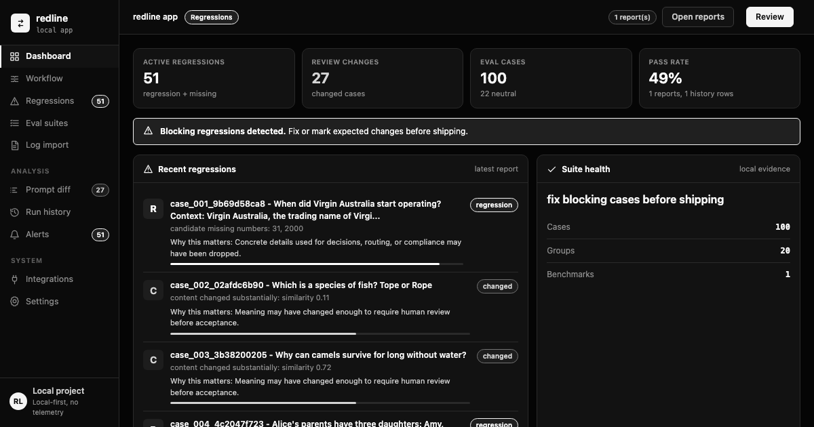

Build suites from JSONL prompt-response logs instead of inventing cases by hand.
Automatic eval suites from logs you already have
redline
Local-first prompt regression diffs for AI engineers. Turn real prompt-response logs into a suite, change your prompt, then catch broken JSON, missing URLs, lost tables, refusals, and other structural regressions before they ship.
$
python -m pip install "git+https://github.com/gowtham0992/redline.git@develop"

Why it exists
You already have the eval data. redline makes it usable.
No cloud account is required for the core loop; CI-friendly checks run locally, cost nothing, and do not depend on hosted judges.
Mark intentional changes, accept new baselines, and keep the suite moving with your prompt.
Core loop
From logs to a shipping gate in four commands.
-
01
Collect behavior
redline watch --log logs/prompts.jsonl -
02
Generate the suite
redline suite .redline/logs/prompts.jsonl --out redline-suite.json -
03
Evaluate a prompt change
redline eval --prompt prompts/v2.txt -
04
Review and accept
redline mark ... && redline accept ...
Trust model
Calibrated signals, not magic approval.
redline catches high-signal structural regressions.
JSON validity, missing keys, URLs, numbers, entities, tables, lists, code blocks, empty outputs, refusals, and obvious policy wording flips are surfaced with reproducible reasons.
Semantic judgment stays explicit.
Tone, factual accuracy, hallucination risk, and subtle reasoning quality need pinned requirements or an optional judge. redline tells you when a run has no structural blockers; it does not pretend that means the answer is perfect.
Bring your stack
Provider-neutral first, adapters when you need them.
stdio command
OpenAI
Anthropic
HTTP APIs
LangChain
LlamaIndex
LiteLLM
JSONL exports
Optional judges
CI dashboards
First-run demo
Run the support-agent regression demo and see a concise prompt drop production details.
redline demo --compact
Local dashboard
Publish self-contained HTML reports as CI artifacts or browse them locally.
redline dashboard --open
Public alpha ready path
Clone it, run the demo, then point it at one real prompt log.
The fastest way to understand redline is to make it catch one regression in your own AI workflow.